Inhalt Index DeskTop Bronstein

 Funktionen und ihre Darstellung Funktionen von mehreren Veränderlichen Grenzwerte
Funktionen und ihre Darstellung Funktionen von mehreren Veränderlichen Grenzwerte


Wenn für eine Funktion zweier Veränderlicher f(x,y) zuerst der Grenzwert für 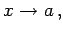 d.h. 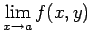 für konstantes y bestimmt wird und darauf von der so gewonnenen Funktion, die dann nur noch von y abhängt, der Grenzwert 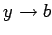 gebildet wird, dann heißt die gefundene Zahl
| 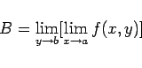 | (2.278a) |
ein iterierter Grenzwert. Eine Änderung der Reihenfolge liefert in der Regel einen anderen Grenzwert
| 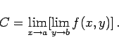 | (2.278b) |
Im allgemeinen ist 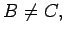 auch wenn beide Grenzwerte existieren.
| Beispiel |
|
Die Funktion 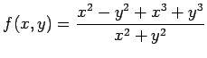 liefert für 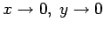 die Werte B = -1 und 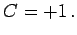 |
Wenn die Funktion f(x,y) einen Grenzwert 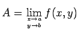 besitzt und die Grenzwerte B und C exisitieren, dann ist 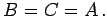 Aus der Gleichheit der Grenzwerte B = C folgt aber noch nicht die Existenz des Grenzwertes 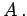